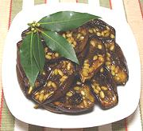

|
Marinated Eggplant AppetizerItaly - Melanzane in agrodolce | ||||
| Serves: Effort: Sched: DoAhead: |
6 app ** 2 hrs Best |
This popular appetizer is easy to make. The eggplants can be picked up by the stem end and eaten whole, though finicky eaters may wish to scrape flesh from the skins. | |||
|
|
1-3/4 ar ------ 1/2 3 1-1/2 3 1/4 2 1 1/2 1/3 1/4 ------ |
# --- c T T c T t t t t --- |
Indian Eggplant (1) Olive Oil ExtV -- Dressing Olive Oil ExtV Lemon Juice Balsamic Vinegar Cloves Pine Nuts Raisins Sugar Chili Flake Salt Pepper -------------- |
If you can, make this a day ahead and refrigerate to allow flavors to blend. Return to room temperature or a little warmer before serving. Make - (2 hours or more - 20min work)
|